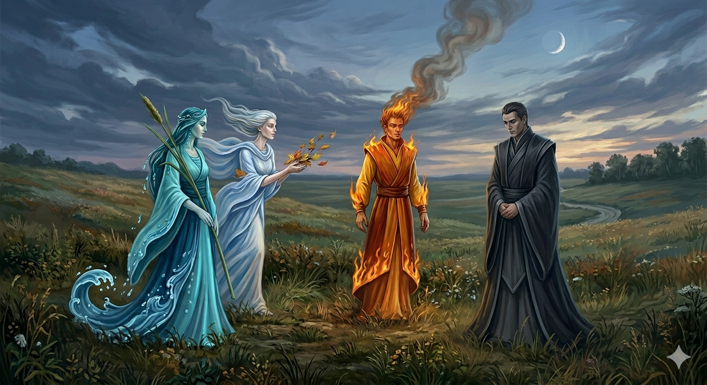

И.А. Дахкильгов. Хьехаме дувцарш - поучительные рассказы-притчи.
И.А. Дахкильгов. Хьехаме дувцарш - поучительные рассказы-притчи. Из ингушского фольклора.

ДӀадаха сий юхадагӀац
Цхьана хана Хийи, ЦӀии, Сийи вӀашагӀакхийтта лелаш хиннад. Тоъал цхьана лийначул тӀехьагӀа, шоай цхьаццача гӀуллакха цхьан юкъа къаста дезаш хиннад уж. ВӀашагӀа мишта кхетаргда шоаш аьлча, Хиво аьннад, эрдз баьннача ше хургда, Михо аьннад гӀаьнаш эгача ше хургба, ЦӀеро аьннад, кӀур ухача хургъя ше. Сий цхьаккха хӀама ца оалаш лаьттад. Хьо йист хӀана хилац, аьнна, хаьттача, аьннад цо. - Ша вӀашагӀакхета а къаста а йиш йолаш да, хӀаьта соцара гӀулакх кхыча тайпара да: цкъа сох къастар цӀаккха сох юха хьакхетаргвац.
РУССКИЙ
Утерянную честь не вернуть
Когда-то дружили Вода, Ветер, Огонь и Честь. Они всегда были вместе, но как-то им необходимо было на время разойтись, чтобы каждый мог заняться своими делами. При расставании стали они рассуждать, как им вновь найти потом друг друга. Вода сказала, что ее можно найти там, где растет камыш. Ветер сказал, что он всегда находится там, где трепещут листья. Огонь отметил, что его можно найти по идущему вверх дыму. Лишь одна Честь стояла молча. Поинтересовались, почему она не называет своих признаков. Она сказала: “Вы можете и расходиться, и вновь сходиться, а мне это не позволено. Тот, кто однажды расстался со мною, расстался навсегда и более со мною не встретится”.
ENGLISH
Once honour is lost, it cannot be regained
Once upon a time, Water, Wind, Fire and Honour were friends. They were always together, but one day they had to go their separate ways so that they could each go about their business. As they parted, they discussed how they might find each other again later. Water said that she could be found where the reeds grew. Wind said he would be where the leaves rustled. Fire said that he could be found by the smoke rising upwards. Only Honour stood in silence. They asked her why she did not name her own signs. She replied: “You may part and come together again, but I am not allowed to do so. Anyone who parts from me once parts from me forever and will never meet me again.”
НОХЧИЙН
ДӀадахан сий йухадагӀац
Цхьана хенахь Хиий, Моххий, ЦӀеий, Сийий вовшахкхетта лелаш хилла. Тоъалц цхьана леллачул тӀаьхьа, шай цхьаццачу гӀуллакхан цхьана йукъахь къаста дезаш хилла уьш. Вовшех муха кхетар ду шаьш аьлча, Хино аьлла, эрз баьллачохь ша хир ду, Махо аьлла гӀаш оьгучохь ша хир бу, ЦӀеро аьлла, кӀур оьхучохь хир йу ша. Сий цхьа а хӀума ца олуш лаьттина. Хьо дист хӀунда ца хуьлу, аьлла, хаьттича, аьлла цо: - Шу вовшахкхета а къаста а йиш йолуш ду, хӀета соьгара гӀуллакх кхечу тайпанера ду: цкъа сох къаьстинарг цкъа а сох йуха схьакхетарвац.
ПОГОВОРКИ
Дуне дуаш вац, ялат дуаш веце. - Тот не живет настояшей жизнью, кто хлеб не ест (не растит). Хина йисте вахе а хина хьурмат де (кхом бе). - Даже живя у реки, воду береги (цени). ХьаошалгӀа вахача модзаца мара чай молаш вац, ший цӀагӀа маькха зирталг бац. - В гостях пьет только чай с медом, хотя дома нет и хлебной крошки.